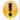

Controlling Messages
Perform below procedures to either create a notification message, enter the message content or select an incident template.
Create New Notification Message
- Select Applications > Notification > Recipients.
- A list displays.
- Select a recipient or a recipient group for which an incident is to be initiated.
- The recipient details display in the General, Recipient User Devices, and Groups Membership expanders.
- Navigate to the Related Items tab and open the Operating Procedure expander.
- Click New Notification Message.
- A Secondary pane with the incident details displays.
- Select the message from the Selected Notifications section.
- Open the Message Content and Control expander.
Enter Message Content
- Open the Message Content expander.
- Click the notification to view and edit the details. For more information, refer to Editing a Message Template Before Launch.
- The Message Details and Message Content sections display.
- Check for the

symbol, and enter the required details in their respective fields. - Click Initiate.
- The incident is initiated.
Select Incident Template
- Open the Incident Details expander. Do one of the following to launch the message:
- Select Initiate new ad-hoc incident to launch the message under ad hoc incident.
- Select Launch under existing incident to launch the message under one of the existing configured incidents.
NOTE: In case of Launch under existing incident, the messages associated with the corresponding incident are also displayed along with the ad hoc message. Select any notification from that list to be launched along with the ad hoc message. - Select the required incident template from the Copy from Incident Template drop-down list.
NOTE: In case of Copy from Incident Template, the messages associated with the corresponding incident are also displayed along with the ad hoc message. Select any notification from that list to be launched along with the ad hoc message. - Select Applications > Notification > Notification Templates.
- A list of available notifications displays.
- Drag the required notification on the launch group in the Secondary pane.